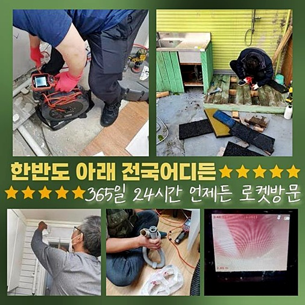
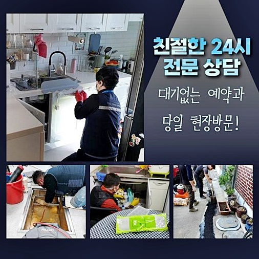
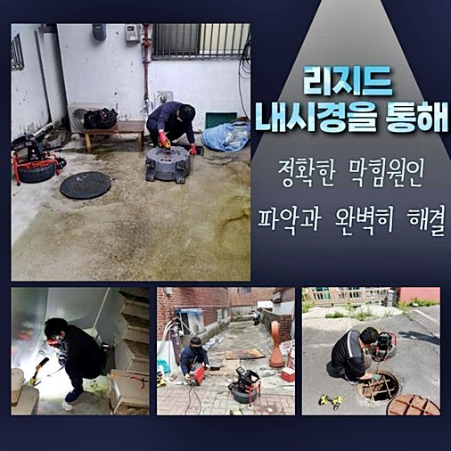
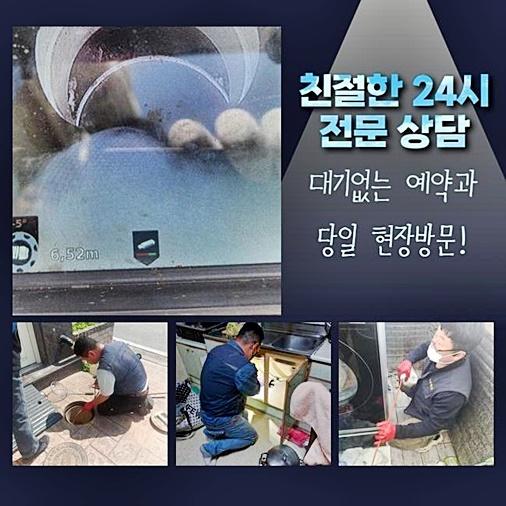
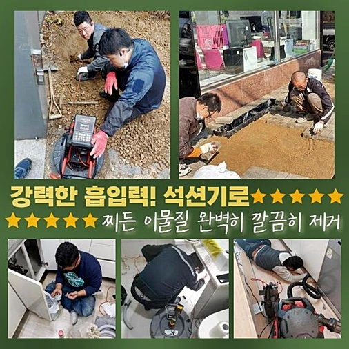

🏠 중앙동세탁실뚫음 가수동 하수구청소 설비
용인 중앙동 하수구막힘 전문 시공 후기

📋 작업 개요
- 위치: 용인 중앙동, 중앙동, 용인
- 서비스 유형: 하수구막힘, 배관막힘, 맨홀막힘, 역류해결, 뚫는업체, 배관청소, 고압세척
- 작업 일시: 2024. 9. 28. 17:17
- 업체명: 하수구수사대 (010-5615-2118)
🔍 문제 상황
중앙동세탁실뚫음 가수동 하수구청소 설비
하수가 순조롭게 순환하지 않는다면 환경적인 오염을 야기시키고 건물안의 상업시설이나 주거지에도 반복되는 피해들을 전가시킵니다
이같은 문제상황을 수리하고자 하신다면 실력과 경험을 갖춘 전문가들의 도움들이 필요하게 됩니다
배수관에 이상현상이 생겨 수리를 진행할때 다른 잠재적인 해당사태를 앞서서 알 수 있는 경우들도 종종 생겼습니다
하수관의 안쪽부위를 자세히 점검해나가면서 예상할 수 없었던 이상현상을 사전에 알 수 있고 규칙적인 배수관 청소를 시행해 안전하게 사용하는 기간을 연장할수 있게 도와주고 하수관의 노후화를 사전에 막아냅니다
불순물이 섞인 물들은 메인하수로를 거쳐서 건물밖으로 내보내집니다
그렇기때문에 주요하수관이 이물질로 막혀버린다면 아랫층에 위치한 집은 역류현상이 야기되기도 합니다
언급 해드렸던 상황이 일어났다면 곧바로 대응하는 자세가 요구됩니다
최근 메인 배관 청소를 실시했지만 아랫층 집에서 역류 이상현상이 생겨 중요 하수시스템의 검사를 원하신다는 연락을 받았어요
고여있는 수준이 심각한 상태여서 아랫층 집으로 오염된 하수가 범람하는 일들이 발생하게 되었는데 빈틈없는 확인을 위해 배관라인을 나눈후에 놓치지 않고 체크할수 있도록 조치들을 시행했습니다

🔎 원인 분석
💡 전문가 진단: 정밀 진단 장비를 사용하여 슬러지의 고착 여부를 판명하고 타격/세척 작업을 실시했습니다.
하수시스템에 오염수의 범람사태가 일어났다면 어떠한 문제점이 연쇄적으로 일어나고 있는지 지속적으로 찾아내는게 필요하게 됩니다
작업 초반에 침전물이 단단하게 붙어있어 분리시키는게 힘들었지만 낙담 하지않고 샤프트기기를 사용해 분쇄 시키는 과정들을 먼저 시행했습니다
이후 작업으로 강한압으로 하수를 분사해 끈적거리는 물때를 비롯하여 딱딱하게 굳은 침전물을 종합적으로 청소하는 작업들을 진행했어요
일상속에서 배관문제로 일어나는 곤란한 사태와 이로인한 비용문제는 심각한 사안이실 거예요다
가게나 근린공공 시설에서 비정상적인 하수시스템으로 인하여 장사를 할 수 없게 하고 그에 따르는 상활을 해결하기까지 수고로움과 시간들이 요구되어집니다
빠른 시간내에 피해를 처리해내지 못하게 된다면 더 큰 문제로 번지는 경우도 자주있어 해결해야하는 문제들이 많아지게 됩니다
가게나 사회의 공공시설에서 배수관이 역류하는 경우 큰 문제상황을 발생시키므로 이를 해결해내고자 하시면 전문가들의 도움들이 매우 중요한 일이죠
다 쓴 일회용품을 하수구에 흘려보내는 일이 없도록 주의해주시고 하수구 주위를 깨끗하게 이용하는게 요구되겠죠
원활하게 진행되는 배수관의 진행을 원하신다면 반복적인 점검으로 인하여 배관 피해를 미리 막는것이 중요하게 됩니다
오염물이 부패된 물에 의한 악취들은 고객님에게 불쾌한 기분을 경험하게하며 일상생활에도 해가 됩니다
주로 음식을 취급하는 가게에서 위생과 관련된 문제사항으로 번질 심각성이 있기에 긴급하게 손봐야합니다

🔧 작업 과정
하수시스템이 오류를 일으키는 경우는 대부분의 건물에서 흔하게들 겪게되시는 일이지만 상업시설이나 근린공공 시설에서 더 큰일로 다가옵니다
비슷한 어려움이 발견되면 조속히 확인하여 대응하는게 요구되겠죠
고압력의 세정기는 노즐선을 통해서 터널같은 하수관의 안쪽부위를 전체적으로 세척 해내고 강력한 수압의 하수를 쓰면서 달라붙어있는 오염원을 제거합니다
이를 통해 하수로 내벽에 있는 딱딱한 오염물질을 말끔하게 세정해냈으며 외벽으로 이어진 하수로를 따라서 불순물을 개운하게 분출하게 합니다
배관 문제상황을 방지하고자 하신다면 일정한 주기를 정해 하수구 근처를 60도 정도의 온수로 깨끗하게 씻고 노폐물이 녹아 배출되게끔 신경 써주세요
배수관이 노후화 될수록 불순물이 침식되고 하수로에 충격이 반복돼서, 반복적으로 점검을 받고 수리하는게 필요하게 됩니다
정리하자면 배관 문제들을 방지하기 위해서라면 일정한 주기를 정한 검사가 중요합니다
첫번째 현장을 마무리하고 이후로 도착한 가정집은 배관 악취를 막는 장치 속에 심각하게 불순물이 쌓이고 있어서 물들이 정상적으로 순환되지 않았습니다
노폐물을 없애기가 위해 플랙스샤프트 기계를 쓰면서 파쇄하는 작업들을 시작하게 되었습니다
작업 초반에 고여있는 여러지점에서 여려웠지만 잘게 오염물질을 제거해내면서 조심스레 유도를 하며 과정을 진행하게 되었습니다
역류현상이 매우 심각한 경우들은 입구와 출구에 기계를 가동시켜 청소하는게 가장 효과가 좋아요
강력한 수압으로 내려보내는 작업은 문제상황을 야기할 수 있어서 아주 세밀하게 시행합니다
진단을 하고보니 외부의 하수관까지도 꽉 막힌 것을 알게 되었습니다
작업과정을 위해서 맨홀부터 오픈하고 진입하였습니다
배수로가 커서 높은 압력이 가능한 동력발생기를 이용하여 오염물질을 제거하기위한 진행이 필요하게 됩니다
이용하시면서 음식에서 나오는 기름기를 배수장치에 넣는 행동이 얼마나 큰영항을 주는건지를 크게 생각치 않습니다


✅ 작업 완료
생활 하시면서 쓰고남은 오물을 하수설비에 흘려 집어넣는 것이 크게 걱정할게 없다 생각하시겠지만 실제 사례들을 보면 하수로에 이물질이 쌓이고쌓여 큰 역류현상이 발생하는걸 반드시 명심하세요
이런 경우도 있지만 딱딱하게 변형된 건물일수록 배수로의 노후화가 일어나서 막히는 사태가 자주 야기됩니다
이런경우에 경우 고압력의 장비는 문제상태에 맟춰서 작업과정을 시행해야 했으며 좁고 넓은 하수관의 설비는 꼼꼼하게 진행되어야 이어지는 피해들이 생기지 않게 됩니다
앞서 보았던 문제상황을 보시자면 기름들로 꽉찬 배관을 강함 힘의 세척기를 사용하여 확실하게 마무리 하였습니다
고압의 세척장비는 높은가격의 기기로서 전문기사가 아니라 일반적인 사용자가 작업한다면 배수관에 피해를 줄수도 있기때문에 꼭! 전문가들의 진단을 요청하세요



⚠️ 하수구 배관 막힘 예방 및 관리 가이드
- ✅ 머리카락, 비닐, 물티슈 등 물에 분해되지 않는 이물질은 하수구 유입을 절대 금지해 주세요.
- ✅ 하수구 거름망을 씌우고 모여진 이물질은 주기적으로 쓰레기통에 바로 비워주셔야 합니다.
- ✅ 배관 노후가 심할 경우 이물질이 더 쉽게 걸리므로 주기적인 배관 세척(고압세척 등)을 권장합니다.
- ✅ 작업 후 1년 이내 재발 시 하수구수사대에서 무상 A/S 보증 서비스를 제공합니다.
💡 핵심 정리
- 확실한 장비 작업(내시경 점검 및 샤프트 스케일링)으로 원인을 뿌리 뽑습니다.
- 작업 후 1년 이내에 동일한 부위 재발 시 100% 무상 A/S 서비스를 보장합니다.
- 서울 · 경기 · 인천 전 지역에 24시간 언제든 긴급 출동할 수 있도록 항시 대기 중입니다.
❓ 자주 묻는 질문 (FAQ)
🚨 용인 중앙동 하수구막힘 문제로 고민이신가요?
정확한 원인 진단과 확실한 시공으로 재발 없는 해결을 약속드립니다.
24시간 긴급 출동 | 서울 · 경기 · 인천 전지역 | 1년 내 재발 시 무상 A/S